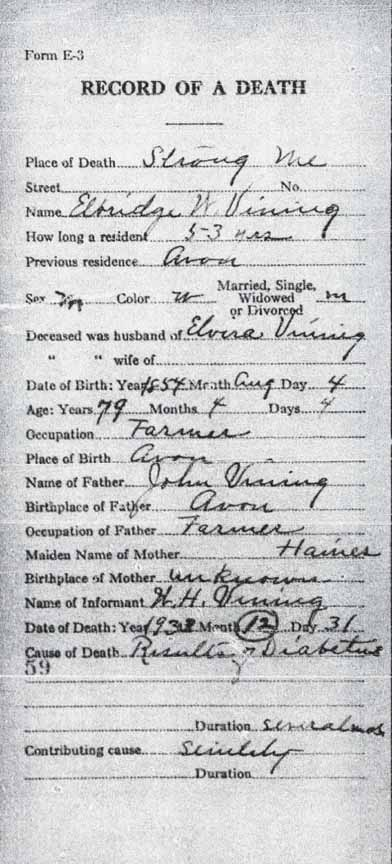
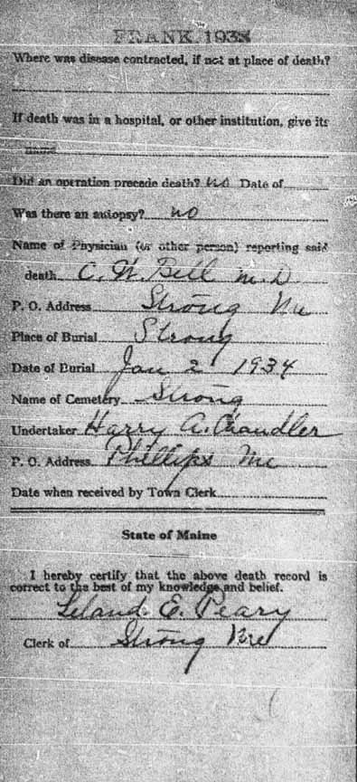
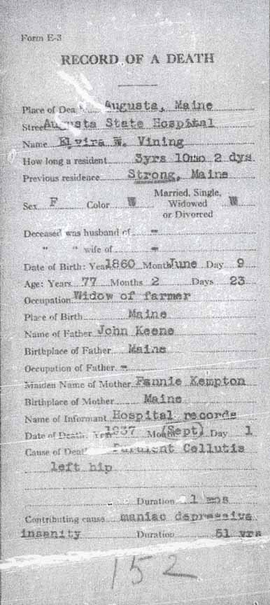
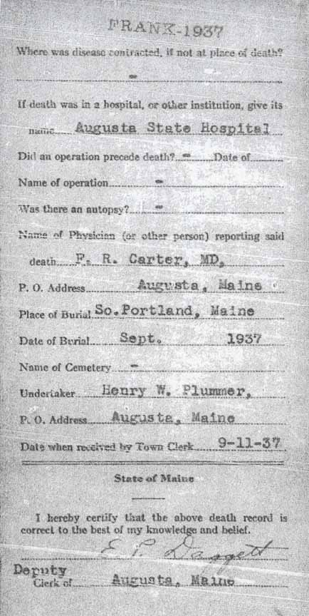

Census Data
| 1880 | 1890 | 1900 | 1910 | 1920 | 1930 | 1940 | |
| Elbridge W. Vining | 25 | ? | 45 | 55 | 65 | 75 | ? |
| Elvira W. (Keene) Vining | 20 | ? | 40 | 41 | 59 | 69 | ? |
| Hervey E. Vining | 6 months | ? | 20 | ? | living in separate household | married and living in separate household | |
| William H. Vining | ? | 12 | ? | 41 [sic] [see note below] |
42 | ? | |
| [Mary F. Vining?] | ? | ? | ? | ? | ? | ? | |
| [child Vining?] | ? | ? | ? | ? | ? | ? |


Death Data
Death records, for Elbridge W. Vining and Elvira W. (Keene) Vining:


